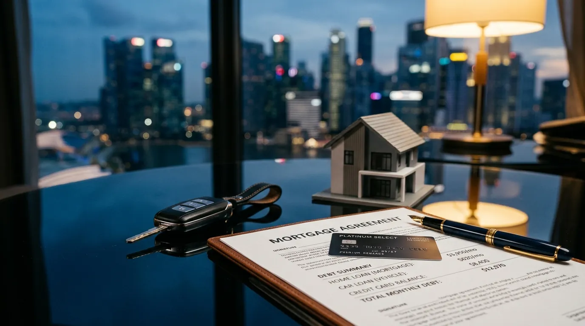

The MAS 4% Stress Test: How It Affects Your Home Loan in Singapore (2026)
- Why the MAS 4% stress test sets your real budget
- What the MAS 4% stress test actually does
- TDSR vs MSR: which cap applies to you
- Worked example: S$8,000 monthly income
- Joint borrowers and the IWAA tenure cap
- How existing debts shrink your loan ceiling
- The stress test, LTV and cash on hand
- Where to go from here
Why the MAS 4% Stress Test Sets Your Real Budget
Most Singapore buyers start with the wrong question: "What is the cheapest home loan rate today?" In April 2026 the answer is attractive — fixed packages start from 1.40% p.a. for jumbo loans, with most buyers locking in between 1.45% and 1.65% p.a. SORA-linked loans price around 1.55%–1.77% p.a. effective, tracking the 1.0201% three-month Compounded SORA plus a 0.20%–0.75% spread. Compare every package on our current Singapore home loan rates page.
It is the wrong question because no bank actually decides your loan size based on the rate you take. Under rules from the Monetary Authority of Singapore, every regulated lender must stress-test your repayment at a 4.00% p.a. floor before approving a dollar. That 4% number, not your 1.45% headline rate, dictates the price tag you can afford.
This guide covers the MAS 4% stress test Singapore borrowers face in 2026, how it interacts with TDSR and MSR, what happens with joint borrowers, and a worked example on a S$8,000 monthly income.
What the MAS 4% Stress Test Actually Does
The stress test is a mandatory affordability calculation. Banks must compute your monthly mortgage repayment at whichever is higher: the contracted rate on your package, or 4.00% p.a. In April 2026, with packages between 1.40% and 2.00% p.a., the 4% floor wins every time.
Think of it as a parallel set of books. You repay the bank at 1.50% p.a. in real life. The bank's credit team approves you as if you were paying 4.00% p.a. The gap between those two numbers is your safety buffer. MAS introduced the floor after the 2008–2014 rate cycles to stop borrowers stretching into loans that would crush them when rates normalise.
Worked Example: S$700,000 Loan Over 30 Years
Take a S$700,000 home loan over a 30-year tenure. At a real rate of 1.50% p.a., the monthly instalment is roughly S$2,416. At the 4% stress floor, the same loan costs S$3,341 a month — almost S$925 more. The bank uses the higher S$3,341 figure when checking your TDSR and MSR. Your wallet only feels S$2,416, but your eligibility is set by the stricter number.
Why Fixed-Rate Packages Still Pass
A common misconception is that fixed packages priced below 4% somehow fail the test. They do not. Banks compute eligibility on the 4% floor regardless of the package you select, so a 1.45% fixed-rate loan and a 1.85% SORA-linked loan give you the same maximum loan quantum on the same income. The package determines your monthly cash flow; the stress test determines the ceiling. For a side-by-side on the two structures, see our fixed vs SORA comparison.
TDSR vs MSR: Which Cap Applies to You
Once the stress-tested repayment is calculated, the bank measures it against one or two ratio caps depending on the property type.
Total Debt Servicing Ratio (TDSR) — All Property Types
The TDSR caps total monthly debt at 55% of gross monthly income. "Total debt" means the new stress-tested mortgage plus every other obligation: car loans, renovation loans, education loans, personal loans, and 5% of any outstanding credit card balance per month. Variable income (commission, bonus, rental, self-employed earnings) is haircut by 30% before it counts.
TDSR applies to bank loans on every residential property in Singapore — HDB flats, executive condominiums, private condos, and landed homes. There is no exemption based on quantum or property type. For a deeper walk-through specifically on private property, read TDSR for private property.
Mortgage Servicing Ratio (MSR) — HDB and EC Only
The MSR is a stricter, second cap that applies only to HDB flats and executive condominiums financed with a bank loan. It limits the mortgage repayment alone — not total debt — to 30% of gross monthly income, again computed at the 4% stress rate.
HDB and EC buyers must clear both TDSR and MSR. In practice the MSR is almost always the binding constraint, because 30% of income runs out long before 55% does. If you are buying a private condo or landed property, MSR does not apply — only TDSR. The HDB concessionary loan (taken from HDB directly, not a bank) sits outside the MAS framework entirely; see HDB loan vs bank loan for the full comparison.
Worked Example: S$8,000 Monthly Income
To make the maths concrete, take a buyer earning S$8,000 a month gross, with no other debt, applying for a 30-year tenure.
If they buy a private condo (TDSR only): 55% of S$8,000 is S$4,400 in allowable monthly debt. At the 4% stress rate over 30 years, S$4,400 supports a maximum loan of roughly S$921,000. Add a 25% down payment (LTV cap is 75% on the first property) and the buyer can target a purchase price near S$1.23 million.
If they buy an HDB flat or EC (MSR binds): 30% of S$8,000 is S$2,400. At 4% over 30 years, S$2,400 a month supports about S$502,000. The TDSR headroom of S$4,400 is irrelevant because MSR caps mortgage servicing first.
Same buyer, same income, same stress rate — but the property class changes the loan ceiling by roughly S$420,000. That is why HDB and EC purchases need a different affordability mindset from condo purchases. Plug your own numbers into our TDSR/MSR affordability calculator to see the exact ceiling for your situation.

Car loans and unpaid credit card balances eat TDSR headroom before any mortgage is counted — clearing them is the fastest lever to lift your loan ceiling.
Joint Borrowers and the IWAA Tenure Cap
When two or more applicants take a loan together, the bank uses the income-weighted average age (IWAA) to set the maximum tenure. IWAA weights each applicant's age by their share of total income, so a younger high earner pulls the average down more than a younger low earner. Maximum tenure is then 65 minus IWAA for HDB bank loans and 75 minus IWAA for private property — capped at 25 years (HDB) or 30 years (private) regardless.
Tenure matters because longer tenures mean lower monthly repayments under the 4% stress test, which means a higher allowable loan. A married couple where one spouse is 45 and the other is 32 will get a noticeably larger eligibility than a single 45-year-old on the same combined income, simply because the IWAA pulls the average age down and lengthens the tenure.
This is one of the levers couples use during a property purchase, alongside decoupling case study strategies for second-property buyers facing 20% to 30% ABSD.
How Existing Debts Shrink Your Loan Ceiling
The second-fastest way to discover the stress test is the painful way: through existing debt. Every dollar of monthly obligation eats directly into your TDSR headroom before the mortgage is even considered.
Car Loans
Take a buyer earning S$10,000 a month with a S$1,200 car loan repayment. TDSR ceiling is S$5,500. The car claims S$1,200, leaving S$4,300 for the mortgage. At the 4% stress rate over 30 years, that supports about S$900,000 — versus roughly S$1.15 million without the car. The car has cost the buyer S$250,000 of borrowing power on top of the loan itself.
Credit Cards
Banks count 5% of any outstanding credit card balance as a monthly obligation, even if you pay it off in full. A S$20,000 lingering balance adds S$1,000 to your assessed monthly debt. Pay it down before the bank pulls your credit bureau report.
Personal and Renovation Loans
Personal loan instalments and renovation loan repayments count at the contracted monthly figure. If you are 12 to 18 months from a property purchase, a quick audit of your credit bureau record is worth the time. Closing dormant facilities and clearing balances can shift your ceiling by tens of thousands of dollars in approved quantum.
The Stress Test, LTV and Cash on Hand
The 4% stress test sets your maximum loan, but two other rules set how much cash and CPF you must bring. Loan-to-value (LTV) on a first property is capped at 75%, dropping to 45% on a second outstanding loan and 35% on a third. Of the down payment, at least 5% must be cash on the first property; the balance can come from CPF Ordinary Account if eligible — see using CPF OA for property for the full breakdown.
Layered on top of all that is Additional Buyer's Stamp Duty (ABSD): 0% on a Singaporean's first property, 20% on the second, 30% on the third or more. Permanent Residents pay 5% / 30% / 35%. Foreigners pay 60% flat. ABSD is paid in cash within 14 days of exercising the OTP, so it is real money on top of the down payment, not part of the loan. First-time HDB buyers should also walk through our first-time HDB buyer guide for grants and HFE timing.
Where to Go From Here
The 4% stress test, TDSR, MSR, IWAA tenure, LTV and ABSD all stack on top of each other. None of them is hard maths, but the combination decides whether the condo you viewed last weekend is realistic. Check your numbers before you fall for a unit, not after.
Three steps that take less than ten minutes: run the TDSR/MSR affordability calculator with your gross income and existing debts; compare today's current Singapore home loan rates across fixed and SORA-linked packages; and if you already own, sanity-check the refinance savings calculator against your current rate to see whether you should be moving. For the full borrower’s playbook in a single PDF — stress-test worked examples, IWAA tenure tables and ABSD/LTV pairings — download the Singapore Mortgage Free Report.
See Your Stress-Tested Loan Ceiling in 60 Seconds
The Nexus affordability calculator applies the MAS 4% floor, your TDSR and MSR caps, IWAA tenure and existing debts in one go.
Open the Affordability Calculator →Prefer a personal review? WhatsApp Dan Ler at +65 8752 0859 for a free portfolio assessment across 16+ MAS-regulated banks. Banks pay our fee — you pay nothing.
Or read first: Singapore Mortgage Free Report — the full stress-test, TDSR and IWAA workbook in one PDF.
Nexus Mortgage SG is an independent Singapore mortgage advisory. This article is general information, not financial advice. Figures are illustrative and reflect conditions as of April 2026; MAS rules can change. For official guidance see MAS: TDSR for Property Loans, HDB: HFE Letter and CPF: Using Your Savings for Housing.